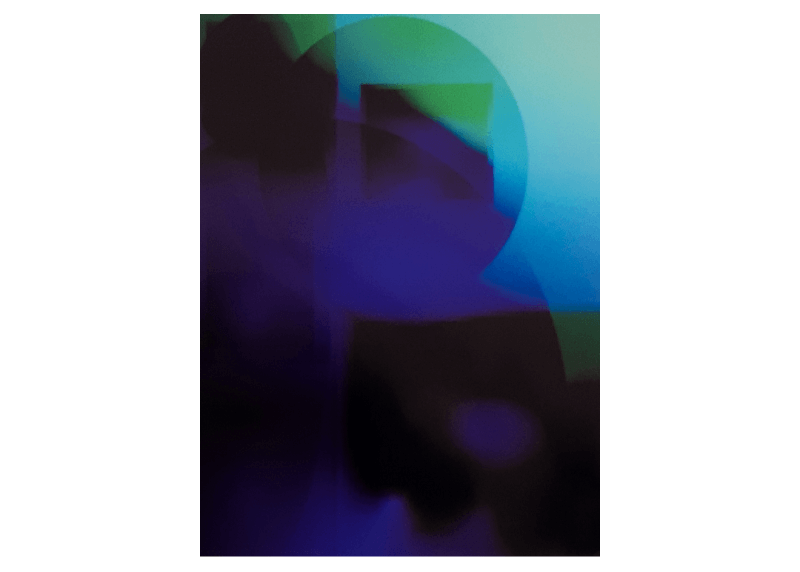

Variations sur l'image muette,
Projet de diplôme, DSAA, 2019.
40 × 30 cm, 8 formats.
En faisant une recherche d'image du mot “numérique” dans un moteur de recherche,
on obtient un ensemble indifférencié d’images aux tonalités bleues, principalement composées
de 0 et de 1, ou de circuits électroniques.
L'image muette c'est l'image qui échoue à faire sens. Qui fait même obstacle à la compréhension.
Ce travail est un préambule de recherche pour essayer comprendre ce qui caractérise cette
représentation muette du “numérique”.